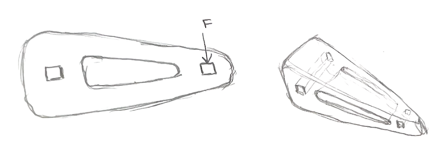
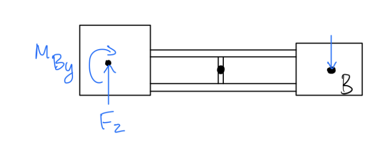
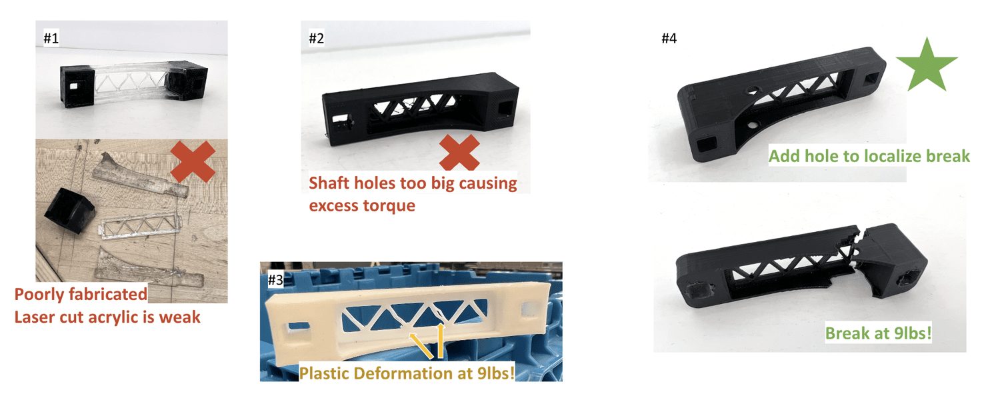

This project was assigned in Mechanics II: 3D Design. Teams of 3 were tasked with designing a bicycle crank for a children’s bicycle that would fail at a brake force of 9 lbf in order to prevent leg injury from the pedal.
The design process started with sketches inspired by real-world bicycle cranks. Our team combined the best parts of each design to optimize our prototype.
We utilized hand calculations for bending, shear, and torsional stress and Solidworks FEA to validate various designs before fabricating physical prototypes laser-cut acrylic and 3D printed PLA.
Collaborators: Catherine Or and Thanh Nguyen


